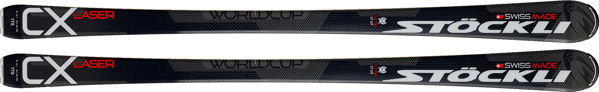

Stöckli Laser CX
Краткое описание товара
Невероятно комфортные и простые в управлении лыжи со спортивным характером. Отлично подходят для катания короткими, а также средними и длинными дугами.
Полное описание товара
Это верхние лыжи, то есть лыжи топ-модель, для катания по подготовленным жестким склонам. Геометрия и радиус поворота не позволяет четко классифицировать их по дисциплине. Это уже не слалом, но еще не гигант. Радиус поворота очень комфортный для большинства лыжников. В остальном лыжи прекрассно держат дугу, влетают в поворот и вылетают из него как по маслу. По начинке они проще чем спортивные. Эта простота сказывается на меньшей пружинитости и отдачи. То есть эти лыжи жесткие, но без характера. Но, может это и хорошо для тех кто еще не совсем уверен в том, что он делает при катании.
Характеристики товара
- Рекомендации по условиям использования: трасса;
- Рекомендуемый уровень подготовки: прогрессирующие, эксперты;
- Профиль: передний рокер;
- Ростовки: 149, 156, 163, 170, 177;
- Особенности конструкции: Solid Metal Edge
| Модель | Геометрия | Ростовка (см) | Радиус бокового выреза (метры) | Уровень подготовки | Цена (BYN) | |
|---|---|---|---|---|---|---|
| Без креплений | С креплениями | |||||
| Y85 | 136-85-110 | 168 | 13,8 |  |
2200 | 2500 |
| 177 | 15,6 | 2200 | 2500 | |||
| 186 | 17,5 | 2300 | 2600 | |||
| Spirit Globe | 122-68-100 | 149 | 11,1 |  |
2200 | |
| 156 | 12,3 | 2200 | 2500 | |||
| 163 | 13,5 | 2300 | 2600 | |||
| 170 | 15 | 2300 | 2600 | |||
| Spirit Evo | 122-78-108 | 155 | 13,7 | |
2200 | 2500 |
| 163 | 14,4 | 2200 | 2500 | |||
| 171 | 15,5 | 2300 | 2600 | |||
| 179 | 16,7 | 2300 | 2600 | |||
Особенности товара
- Sandwich System: стекловолокно — слой титанала — поддерживающая оплетка — комбинированный сердечник — слой титанала — стекловолокно. Усиление титаналом обеспечивает лыжам гибкость и равномерно распределенную торсионную жесткость по всей длине лыжи, что позволяет совершать плавные и абсолютно точные повороты.
- SST — многолетний опыт и новые технические решения в разработке боковых стенок сэндвича позволяют Stockli точно регулировать изгиб кривой для оптимальной передачи нагрузки на снег.
- Комбинированный сердечник — комбинированный сердечник из дерева и ламинированного фибергласса.
- Soft Rocker — благодаря Soft Rocker конструкции лыжи ощущаются короче чем есть, что делает их более разносторонними. Укороченная контактная длина облегчает карвинг на склоне и, особенно на более широких лыжах, значительно уменьшает количество необходимой для движения мускульной силы.
- Скользяк Racing Graphite — гоночный графит с выгравированным логотипом, швейцарская точность настройки.
- Tip Protection — функциональность и эстетика — так можно описать новую защиту для мыска, которую можно увидеть на трассовых моделях. Изготовленая из металла, она выдерживает даже сильные нагрузки, прекрасно защищает нос лыжи от износа и выглядит невероятно элегантно.
- Tail Protection — каждая пара лыж получает свой собственный серийный номер, который также поможет защитить владельца от кражи. А для того, чтобы серийный номер не потерялся, Stockli выгравировывает его непосредственно на лыжах, на зашитной алюминиевой вставке в хвосте.
<<< Вернуться в каталог
Ссылка на сайт производителя http://www.stoeckli.ch/